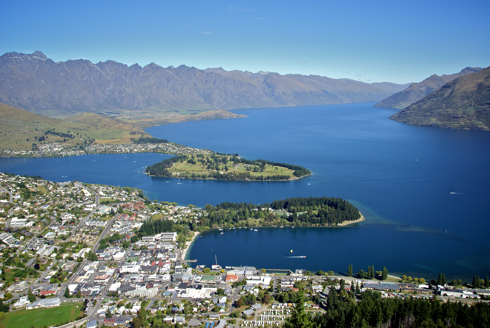

EpicLand Theme park is full of fun and adventurous activities to explore.
From flying around in the air on the high rides to being lower on the ground exploring other
activities we have to offer.

EpicLand Theme Park was founded in 1990 in heart of Queenstown, New Zealand. Later on in the late 2000's the Park took off with thousands of
tourists arriving and exploring everyday. With the park being close to the city center there is so much to explore
and to enjoy for everyone. Lake Wakatipu is only a short walking distance from the city center, so taking a dip under the hot sun is possible!
Opening Hours:
Monday - Friday: 10am-3pm
Saturday - Sunday: 9am-6pm